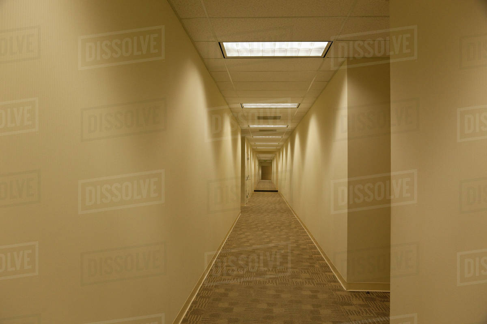

The reason i chose the environment because the long hallway seemed like a cool choice. I liked the idea of using that perspective of where it seems smaller and smaller at the end of the hallway. The colors I used were very dingy and dark similar to the original image. I used the pen tool to carefully map out the edges and colored in the boxes to give it a perfected look. I even colored in certain areas where it looked almost 3D.